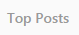
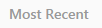
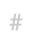
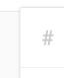
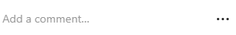

import random INSTAGRAM_MAX_LIMIT_PER_HOUR=400 NUMBER_OF_CYCLES=2 NUMBER_OF_PICTURES_TO_LIKE_PER_TAG=5 TAGS_GENERAL=["likeforlike","like4like","follow4follow","followme","finland","winter","nature","travel", "moscow","saintpetersburg","russia","vacation","happy", "erasmus","me","sky","iceland","helsinki","telaviv", "holiday","sunset","tourist","music", "tbt","breakfast","dinner","labrador","sea","beach", "forrest","greece","italy","greekgoddess"] TAGS_RUSSIAN = ['Фанко', 'фанкомания', 'игрушки', 'плейстейшен', 'плейстейшн4', 'фанкосемья', 'игры', 'дисней', 'пиксар', 'анимация', 'Москва', 'Санкт-Петербург', 'СПб', 'Россия', 'коллекция'] TAGS = ['funko','toys','playstation4','funkocommunity', 'xbox','playstation','funkopop', 'gaming','disney','funkofamily','pixar','animation','xbox1','funkomania', 'geek','harry potter' , 'funkopops','saint petersburg','russia','likeforlikes','likeforfollow','like4follow','like4likes','likers','vscocam', 'follow','following','followtrain','aeroflot','winter','instarussia','vsco','moscowcity','russian','vscorussia'] COMMENTS = ['COOL POST!','NICE','LIKE','Great ! ','Keep up the good job !','I reeeaaallly like','I like your instagram profile!', 'Keep up the good work !','COOL!','Well done ! Looking forward for your next post', "best picture I've seen during the last ten minutes ;)", "best picture I've seen in the last 20 seconds ;)", "My girlfriend likes this picture","I AM GROOOT", "usually I don't comment but this time I couldn't resist ;)", "I'm sitting on the toilet right now and your post just solved all my problems in life" 'Good job ! Keep posting more','Nice ! keep posting more cool stuff !',"cool photo! Which camera did you use?", 'Your insta page is super impressive!', 'POP :)',"best picture I've seen today"] COMMENTS_RUSSIAN = ['Классный пост!','Супер, мне нравится эта фотка!','Ваш инстаграм просто офигенный!!!', 'Буду ждать новый пост.','На какой телефон сделана эта фотка?' , 'Очень красиво! На какой телефон вы сделали это фото?', 'Фото просто супер! Вы сами его сделали?'] statistics={'number_of_exceptions':0,'number_of_likes':0,'number_of_comments':0,'number_of_users_follow':0} def amountOfLikesIsLegal(amount_of_likes,max_likes): if(amount_of_likes>max_likes): raise ValueError("Number of pictures to like exceeded instagram limits") def refresh(): type(Key.F5) wait(3) def get_to_page_header(): type(Key.ESC) wait(0.2) type(Key.HOME) wait(0.2) def go_to_home_page(): get_to_page_header() click() wait() def open_top_posts(): get_to_page_header() click(Pattern().targetOffset(101,166)) def open_recent_posts(): get_to_page_header() #dragDrop(Pattern("1473427655253.png").targetOffset(-2,145), Pattern("1473427816419.png").targetOffset(0,-270)) type(Key.PAGE_DOWN) click(Pattern().targetOffset(103,171)) waitVanish() def like_photo(): click(Pattern().targetOffset(-132,-2)) click() waitVanish(,0.5) def load_instagram_hash_page(hashtag): get_to_page_header() wait(Pattern().targetOffset(-359,-6)) type(Pattern().targetOffset(-359,-6), '#' + hashtag + ',' ) wait(,2) wait(1) click(Pattern().targetOffset(17,-2)) waitVanish() def post_comment(): text = COMMENTS[random.randint(0,len(COMMENTS)-1)] print(text) type(Pattern().targetOffset(-117,0), text) wait(2) type(Key.ENTER) wait(2) def follow(): click() wait(1) number_of_pictures=NUMBER_OF_CYCLES * NUMBER_OF_PICTURES_TO_LIKE_PER_TAG * len(TAGS) amountOfLikesIsLegal(number_of_pictures,INSTAGRAM_MAX_LIMIT_PER_HOUR) for cycle in range(NUMBER_OF_CYCLES): refresh() for tag in TAGS: print tag i=0 try: load_instagram_hash_page(tag) open_recent_posts() #open_top_posts() for i in range(NUMBER_OF_PICTURES_TO_LIKE_PER_TAG): if(not random.randint(0,8)): print('comment') post_comment() statistics['number_of_comments']+=1 if(not random.randint(0,20)): follow() statistics['number_of_users_follow']+=1 like_photo() statistics['number_of_likes']+=1 except: print "exception" statistics['number_of_exceptions']+=1 print i refresh() go_to_home_page() go_to_home_page() print("finished with {} exceptions." .format(statistics['number_of_exceptions'])); print("liked {} pictures." .format(statistics['number_of_likes'])); print("commented on {} pictures" .format(statistics['number_of_comments'])); print("followed {} users." .format(statistics['number_of_users_follow'])); print("maximum number of pictures {}.".format(number_of_pictures))